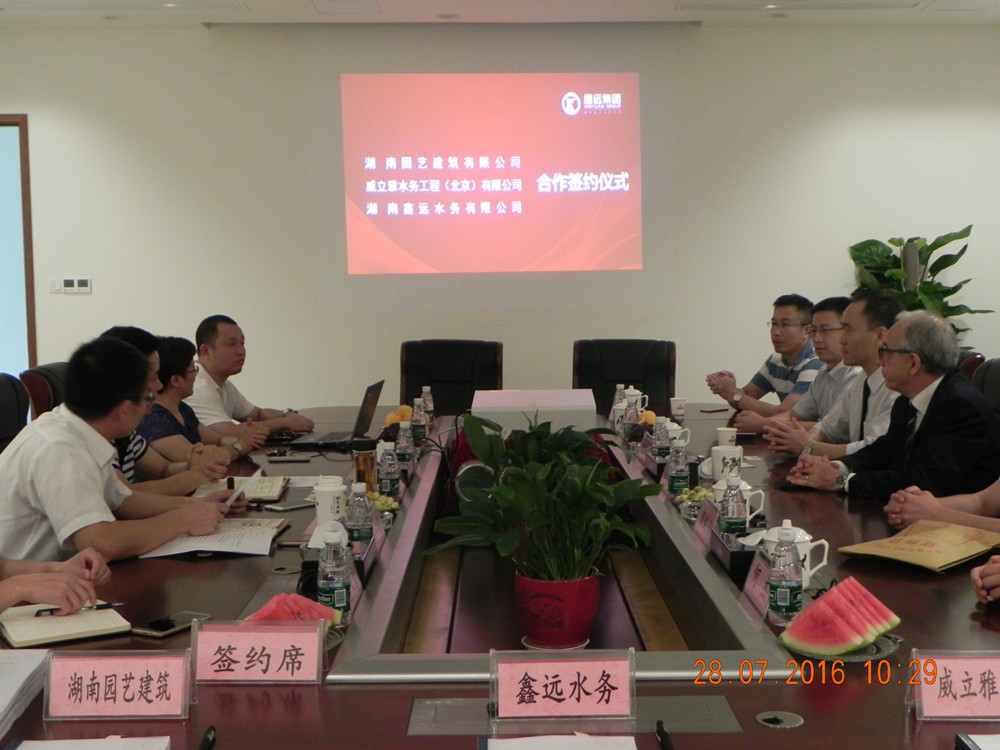

来源：鑫远水务 添加时间：2016-07-28
7月28号上午，湖南鑫远水务有限公司（以下简称鑫远水务）、威立雅水务工程（北京）有限公司与湖南园艺建筑有限公司 就长沙市开福污水处理厂二期提标扩建系统工艺包采购事宜在集团十楼多媒体会议室签订了三方合作协议，开启了鑫远水务与 世界著名水务巨头友好合作之路，预示着长沙市开福污水处理厂二期提标扩建项目核心工艺加快落地。集团执行总裁喻磊、副 总裁蔡江、总裁助理许明德等领导及合作方代表出席了签约仪式。
签约仪式上，集团总裁助理许明德向签约单位介绍了集团概况，并进一步阐述了此次签约的背景和意义。执行总裁喻磊对两家单位表示热烈欢迎，指出此次三方合作将整合三方技术和产业优势，稳步推进长沙市开福污水处理厂二期提标扩建项目顺利建成。
威立雅水务工程（北京）有限公司CEO—Jean-LUC Yvon CRAN (让律克)表示与鑫远水务的合作充满信心和期待。此次签约有利于鑫远水务与各战略合作伙伴形成优势互补，协同增效，共同助力环保产业的大力发展。
